前言
標籤，一開始我以為只要在原本的 table 多開一個叫做 tag 的欄位就解決了，哪有什麼難的？
如果你也這麼想的話，那本篇應該可以讓你有些收穫。
本篇文章將會介紹如何在專案裡加上標籤的功能，並且搭配select2套件讓新增標籤時可以變得好看一點。
大概會像這樣
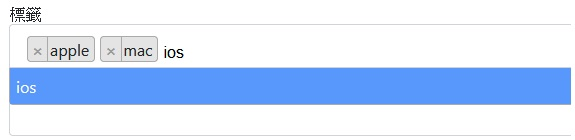
環境要求
若是手邊還沒有專案，但也想跟著練習的話，可以將這個 tag-demo clone 下來邊看邊做。
- Rails
- Yarn
- Git
環境設定
若是使用上面那個repo來做的話，clone下來後請先輸入以下指令：
1. $bundle install
2. $yarn install
3. $rails db:migrate
4. $rails db:seed
5. $foreman s
之後打開瀏覽器，輸入網址：localhost:3000
應該可以看到這個畫面，裡面有seed產生的20筆商品資料。
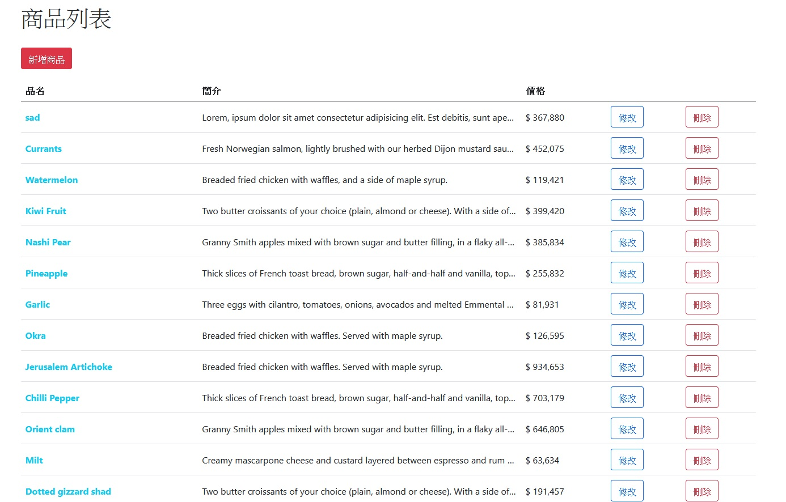
實作標籤功能
標籤不是商品資料表的其中一個欄位，而是另外一個資料表，並且與商品是多對多的關聯。
因此，我們接下來要新增標籤的 model 和多對多所需要的第三方資料表。
新增標籤和商品的關聯
1. $rails g model tag name
新增一個叫做 Tag 的 model，並且有一個 name 欄位
2. $rails g model tagging tag:belongs_to product:belongs_to
新增一個叫做 Tagging 的 model，準備作為第三方關聯資料表來使用，因此加上 tag:belongs_to 和 product:belongs_to
3. $rails db:migrate
rails g model 的指令會產生對應的 migration 檔案，記得跑這個步驟才能建立資料表
4. 在 app/models/tag.rb 及 app/models/product.rb 新增關聯
# app/models/tag.rb
class Tag < ApplicationRecord
has_many :taggings, dependent: :destroy
has_many :products, through: :taggings
end
# app/models/product.rb
class Product < ApplicationRecord
has_many :taggings, dependent: :destroy
has_many :tags, through: :taggings
...
end
因為我們剛剛在建立 Tagging model 的時候，已經有設定 belongs_to 的對象了，打開 app/models/tagging.rb 應該可以看到系統幫我們設定好的關聯：
# app/models/tagging.rb
class Tagging < ApplicationRecord
belongs_to :tag
belongs_to :product
end
基本款: 可以在 product 上新增 tags
5. 在 _form.html.erb 新增一個可以輸入標籤的input
<!-- app/views/products/_form.html.erb -->
...
<%= simple_form_for(product) do |f| %>
...
<%= f.input :tag_list, label: "標籤", input_html: {class: "form-control"} %>
...
<% end %>
6. 在 products_controller.rb 新增對應的 Strong Parameter
# app/controllers/products_controller.rb
class ProductsController < ApplicationController
...
def product_params
params.require(:product).permit(:name, :description, :price, :tag_list)
end
...
end
但是 Product 並沒有 tag_list 這個 column，這樣該怎麼把這個輸入的值給存進去呢？
這時候開啟瀏覽器，點「新增商品」的時候，會跑出下面這個錯誤訊息：
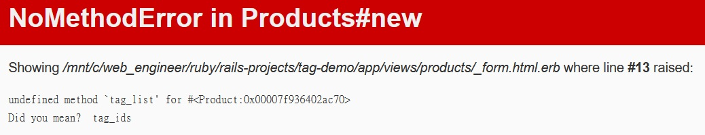
出現 undefined method `tag_list’ for #Product:0x00007f936402ac70
其實，當我們在 controller 設定 _params 的時候，Rails 會去呼叫這個 model 對應 column 的 setter ， 以這個練習專案來舉例的話，Rails 會去做這些事情：
product.name = product_params[:name]
product.description = product_params[:description]
product.price = product_params[:price]
product.tag_list = product_params[:tag_list]
而目前我們還沒有幫 Product 加上這個方法，所以它會出現 NoMethodError。
7. 在 Product 新增實體方法
除了新增商品時需要的 setter 之外，順便新增一個 getter 給它
# app/models/product.rb
class Product < ApplicationRecord
...
# 新增 setter
def tag_list=(names)
self.tags = names.split(',').map do |item|
Tag.where(name: item.strip).first_or_create!
end
end
# 新增 getter
def tag_list
tags.map(&:name).join(', ')
end
end
這樣就可以成功新增商品的標籤了！
8. 在 views 顯示出商品的標籤
<!-- app/views/products/index.html.erb -->
...
<th>品名</th>
+ <th>標籤</th>
<th>簡介</th>
...
<td><%= link_to product.name, product_path(product), class: "text-decoration-none text-info fw-bold" %></td>
+ <td><%= product.tag_list %></td>
<td class="overflow-hidden w-solid textOverflow"><%= product.description %></td>
...
滑到最下面，應該可以看到剛剛新增的商品以及它的標籤名稱，如果覺得往下滑很麻煩的話，我們可以修改商品的排序，最新建立的排在最上面，只要在 products_controller.rb 做個簡單的修改，就可以達到這個目的。
# app/controllers/products_controller.rb
class ProductsController < ApplicationController
...
def index
- @products = Product.all
+ @products = Product.includes(:tags).order(created_at: :de)
end
...
由於在views那邊使用 @products.each do … product.tag_list 會出現 N + 1 次查詢的問題
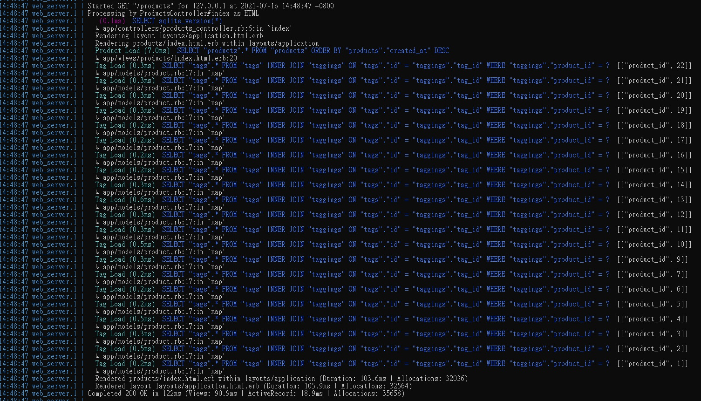
所以要記得在這邊加上 includes(:tags) 來解決。
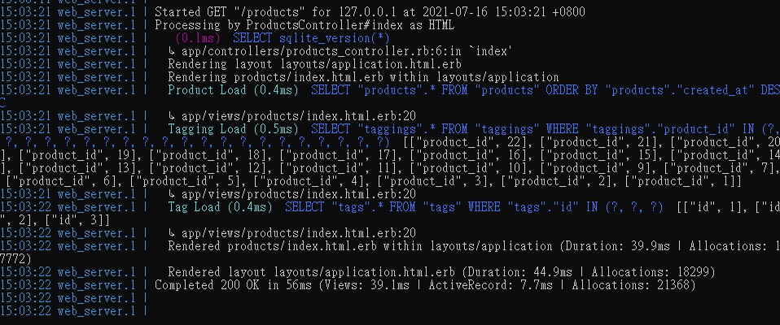
參考畫面長這個樣子：
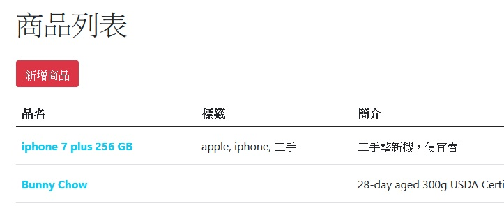
進階款: 使用 select2
雖然目前已經完成標籤的功能，但現在看起來實在是太醜了。
接下來會使用 select2 這個套件，來美化我們的標籤。
9. $yarn add select2
安裝 select2
除了使用 yarn 的方式來安裝之外，也可以使用 npm 或是 select2 的 gem
10. 修改 products_controller.rb 對應的 Strong Parameter
我們原本輸入到標籤的 input，按下儲存後傳送的參數是字串的型態：”tag_list”=>”apple, iphone, 二手”
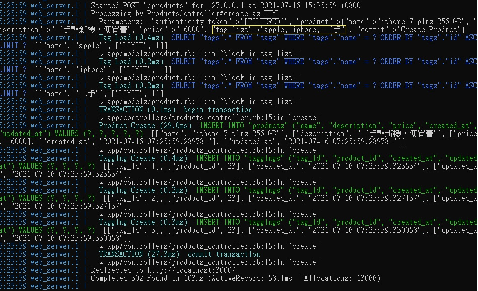
但是，select2 會使用選單的多重選項（一次可以輸入很多個選項(標籤)），所以我們在 controller 就必須改以陣列的方式來接收這個表單輸入。
# app/controllers/products_controller.rb
class ProductsController < ApplicationController
...
def product_params
params.require(:product).permit(:name, :description, :price, { tag_items: [] } )
end
...
end
11. 修改 Product 的實體方法
因為 controller 已經改成傳過來的會是陣列的型態，所以這邊必須要修改 Product 的 setter 和 getter 方法。
# app/models/product.rb
class Product < ApplicationRecord
...
# 新增 setter (select2)
def tag_items=(names)
self.tags = names.map{|item|
Tag.where(name: item.strip).first_or_create! unless item.blank?}.compact!
end
# 新增 getter (select2)
def tag_items
tags.map(&:name)
end
end
12. 修改 view 顯示標籤的方法
<!-- app/views/products/index.html.erb -->
...
<td><%= link_to product.name, product_path(product), class: "text-decoration-none text-info fw-bold" %></td>
+ <td><%= product.tag_items %></td>
<td class="overflow-hidden w-solid textOverflow"><%= product.description %></td>
...
13. 在輸入表單套用 select2
這邊除了修改 view 之外，還需要增加一些 JavaScript
<!-- app/views/products/_form.html.erb -->
...
<%= simple_form_for(product) do |f| %>
...
<%= f.input :tag_items, collection: product.tag_items, label: "標籤", input_html: {multiple: true, class: "form-control js-tag-select"} %>
...
<% end %>
// app/javascript/packs/application.js
...
// select2
import "select2"
import "select2/dist/css/select2.css"
document.addEventListener("turbolinks:load", () => {
...
$(".js-tag-select").select2({
tags: true,
tokenSeparators: [',', ' ']
})
})
這邊設定完成後，再次點選「新增商品」，沒意外的話會看到以下畫面：
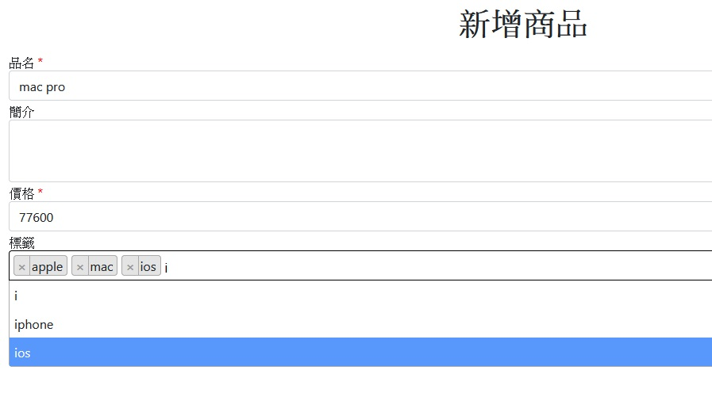
14. 重新設定標籤
當很開心地新增完標籤、按下送出後，卻發現商品列表竟然長這個樣子，而點修改卻也無法正常顯示標籤。
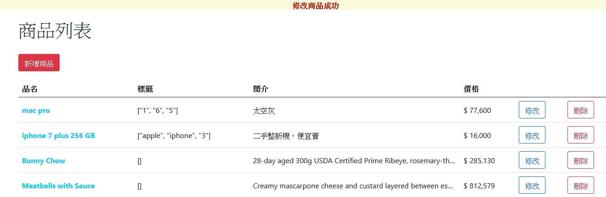
打開 rails console，輸入 Tag.all 查看，卻看到一堆莫名其妙的東西：
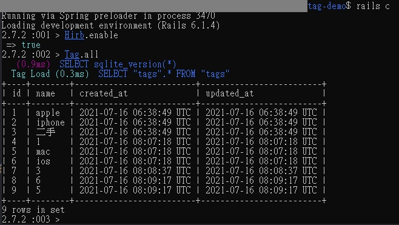
別緊張，我們先把標籤全部都刪掉，輸入 Tag.destroy_all，接著重新開一次伺服器，所有商品的標籤都會變成一個空陣列：
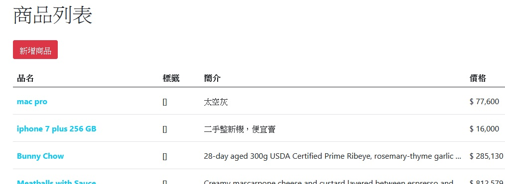
接著再試著新增商品、修改商品、刪除商品看看，標籤的功能應該就會恢復正常囉！
15. 用 view helper 及 css 美化標籤
雖然用 select2 讓新增&修改商品時，標籤看起來已經好多了，但是在商品列表的樣子，旁邊都還有個中括弧，實在是不怎麼美觀。這裡可以自己新增一個 view helper 搭配 css 來讓商品列表的標籤看起來不會這麼慘不忍賭。
15-1. 新增 helper
# app/helpers/product_helper.rb
module ProductHelper
def tag_items_view(product)
product.tags.map do |tag|
%Q(<span class="tag">#{tag.name}</span>)
end.join(' ')
end
end
15-2. 修改 app/views/products/index.html.erb
<!-- app/views/products/index.html.erb -->
...
<td><%= link_to product.name, product_path(product), class: "text-decoration-none text-info fw-bold" %></td>
- <td><%= product.tag_items %></td>
+ <td><%= tag_items_view(product).html_safe %></td>
<td class="overflow-hidden w-solid textOverflow"><%= product.description %></td>
...
15-3. 新增 css
// app/javascript/styles/common.scss
...
.tag {
display: inline-block;
font-weight: 400;
line-height: 1.5;
color: #cca700;
text-align: center;
text-decoration: none;
vertical-align: middle;
background-color: transparent;
border: 1px solid #cca700;
padding: 0 0.75rem;
font-size: 1rem;
border-radius: 0.25rem;
}
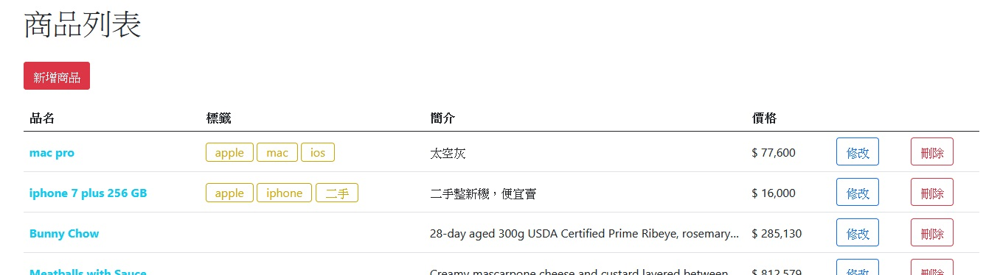
大功告成！！
補充
本篇文章的程式碼都會放在我的GiuHub上面，在 tag-demo分支，若有任何問題或是指正，歡迎再上面留言跟我說，謝謝！
轉載請註明來源。